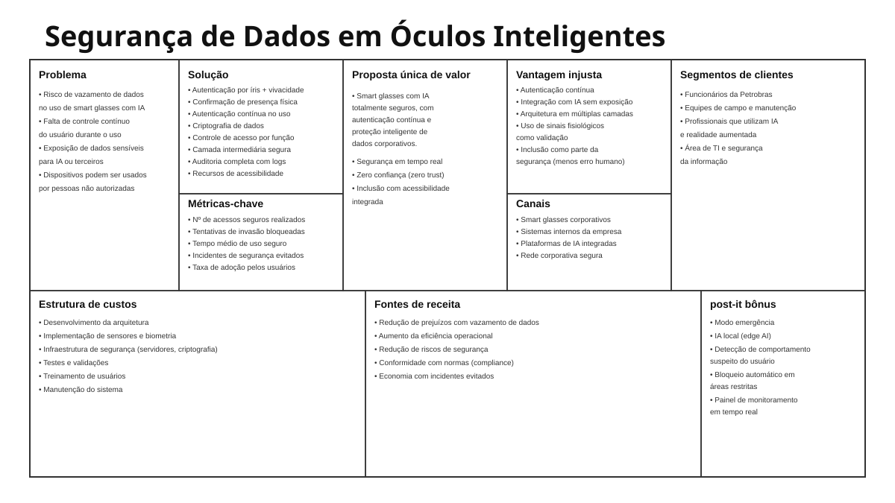

Segurança de Dados em Óculos Inteligentes
Habilidade: Não especificado na atividade.
Assunto: Criar um canvas de modelo de negócio para uma solução de segurança de dados em smart glasses com IA, abordando problema, solução, proposta de valor, métricas-chave, canais, segmentos de clientes, estrutura de custos e fontes de receita.
Crítica pessoal: Foi desafiador pensar em todos os aspectos de segurança para um produto inovador como óculos inteligentes com IA. O canvas ajudou a organizar as ideias e mostrou como a segurança de dados precisa ser pensada desde o início do desenvolvimento, e não apenas como um recurso adicional.
Acessar Atividade